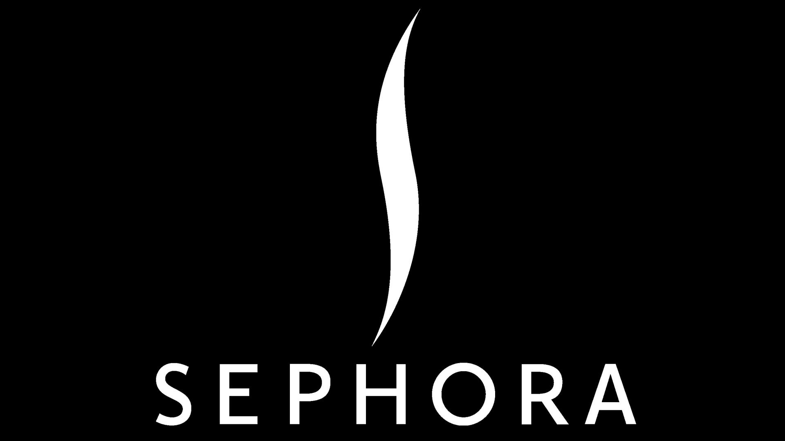

Loreal Paris
L'Oréal Paris es la marca de cosméticos más importante del mundo, que permite que todos tengan acceso a lo mejor de la belleza de lujo. Desde el maquillaje y el cuidado de la piel hasta el cuidado del cabello y la coloración, nuestro espíritu pionero guía nuestra excelencia científica y nuestra constante innovación.
Natura
NATURA es una empresa de cosméticos sustentables que está invirtiendo en la plataforma de la nube y que consiguió beneficios reales en cuanto a flexibilidad, rendimiento y economía de recursos, lo que se vio reflejado en su proyecto más reciente orientado a las pruebas de nuevas sustancias, algo fundamental para el éxito de su negocio.

Sephora
ephora es una de las cadenas de distribución de productos de belleza más grandes de Europa. Presente en Estados Unidos desde 1998, la empresa continúa hoy en día desarrollándose sobre todo en Asia. Ven a descubrir nuestra empresa, nuestros valores y nuestro innovador enfoque sobre la belleza. Descubre nuestras originales tiendas y nuestros diferentes sitios web, y accede al grupo LVMH.
Caudalie vinoperfect
Caudalie Vinoperfect es una línea de cuidado de la piel de la marca francesa Caudalie, conocida por sus productos basados en los beneficios antioxidantes de la uva. Esta línea se centra en corregir manchas y mejorar la luminosidad de la piel. Sus productos contienen Viniferina, un ingrediente derivado de la vid que ayuda a reducir la apariencia de manchas oscuras y unificar el tono de la piel. Vinoperfect ofrece una variedad de productos, como sueros, cremas hidratantes y mascarillas, formulados para abordar problemas de pigmentación. Los beneficios incluyen una piel más luminosa, uniforme y radiante, además de reducir la apariencia de marcas de acné y hiperpigmentación. Estos productos se pueden usar tanto de día como de noche, adaptándose a diversas rutinas de cuidado de la piel. En resumen, Caudalie Vinoperfect ofrece una solución natural y efectiva para mejorar la apariencia de la piel, utilizando ingredientes derivados de la vid y enfocándose en la corrección de manchas y la luminosidad.
Lancome
Lancôme es una reconocida marca de cosméticos y productos para el cuidado de la piel de origen francés, fundada en 1935. Con una reputación de lujo y calidad, Lancôme ofrece una amplia gama de productos, desde maquillaje hasta cuidado de la piel y fragancias. La marca se destaca por su innovación en la investigación científica y la formulación de productos de alta calidad. Lancôme ha desarrollado varias líneas de cuidado de la piel, como "Advanced Génifique" y "Rénergie", que abordan diversas preocupaciones, como el envejecimiento, la hidratación y la luminosidad de la piel. Sus productos suelen estar formulados con ingredientes premium y tecnologías patentadas para proporcionar resultados visibles y duraderos. Lancôme también es conocida por sus icónicos productos de maquillaje, como la base "Teint Idole Ultra Wear" y el delineador de ojos "Artliner". En resumen, Lancôme es una marca de renombre internacional que ofrece productos de alta calidad para el cuidado de la piel, el maquillaje y fragancias, respaldados por décadas de experiencia en la industria cosmética y un enfoque en la innovación y la excelencia.
La Roche Posay
La Roche-Posay, marca francesa de productos dermatológicos y cosméticos, se destaca por su enfoque en el cuidado de la piel sensible. Fundada en 1975 y parte del grupo L'Oréal desde 1989, ofrece productos desarrollados en colaboración con dermatólogos. Su icónico Agua Termal es reconocida por sus propiedades calmantes y suavizantes. La marca se compromete con la investigación dermatológica y utiliza tecnologías innovadoras, como el sistema Mexoplex en sus protectores solares. Ofrece una amplia gama de productos para limpieza, tratamiento y protección de la piel sensible. Muchos de sus productos son recomendados por dermatólogos y utilizados en clínicas dermatológicas. En resumen, La Roche-Posay ofrece soluciones efectivas y suaves para las necesidades de la piel sensible, respaldadas por la ciencia y la colaboración con expertos dermatológicos.